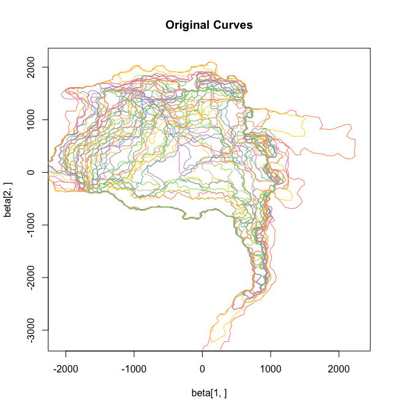
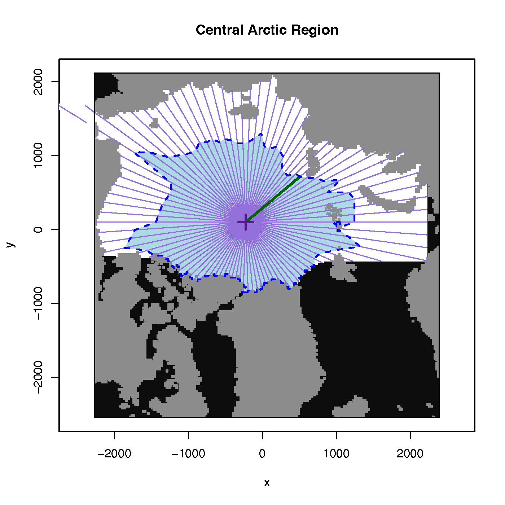
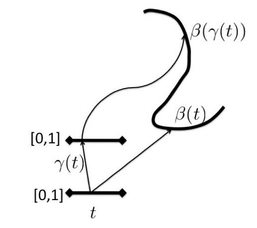
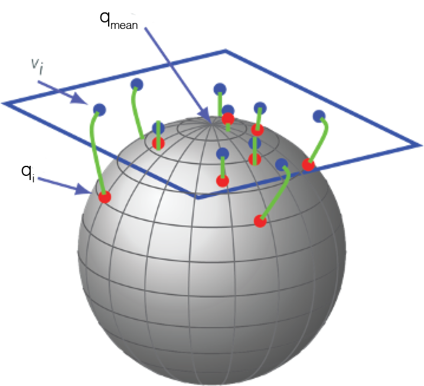
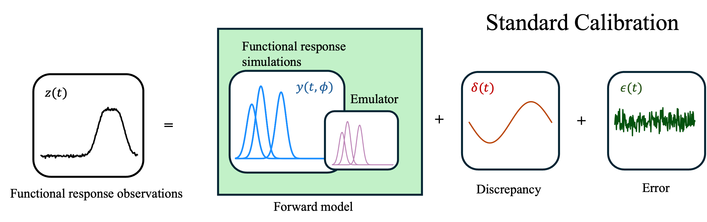
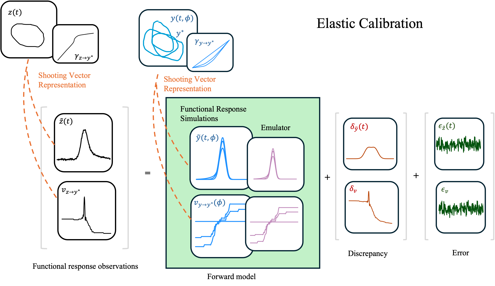
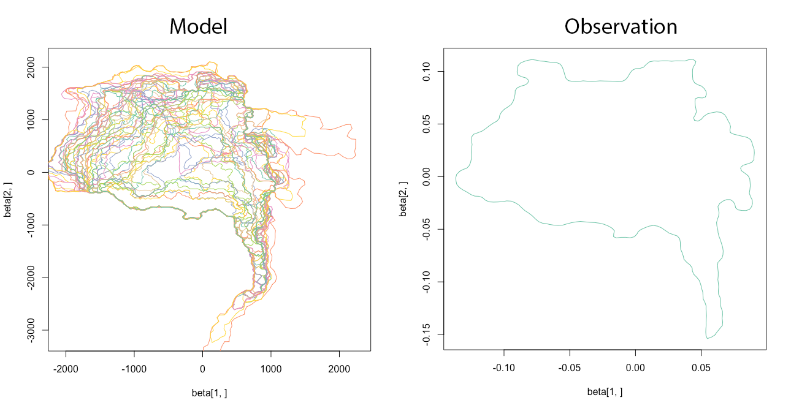
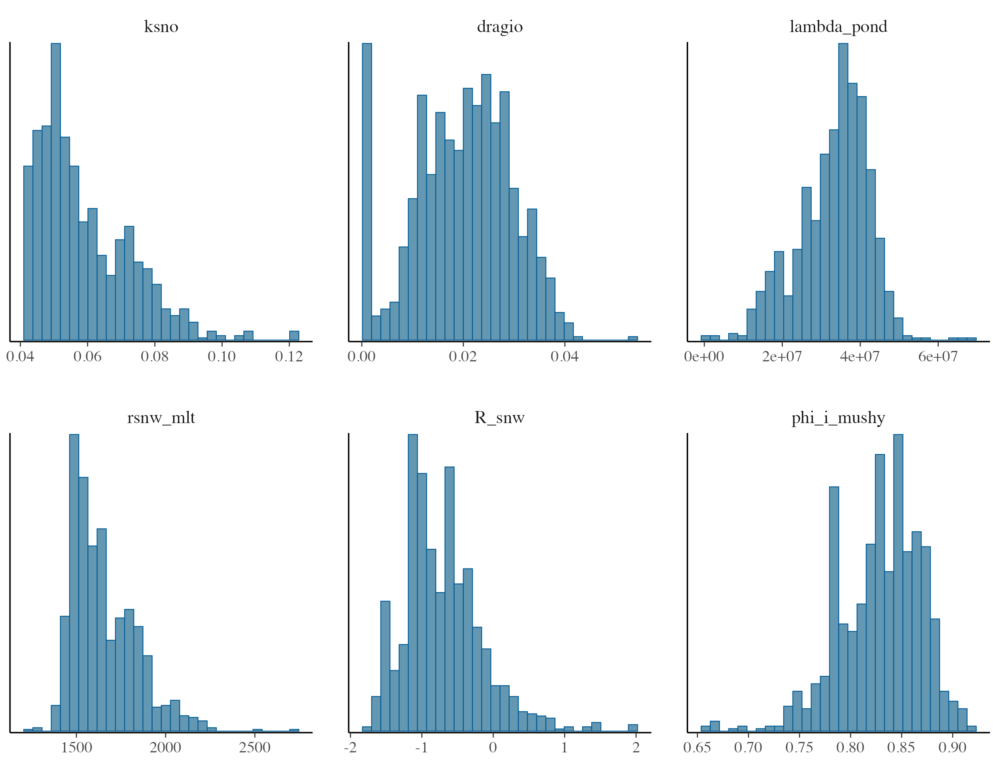
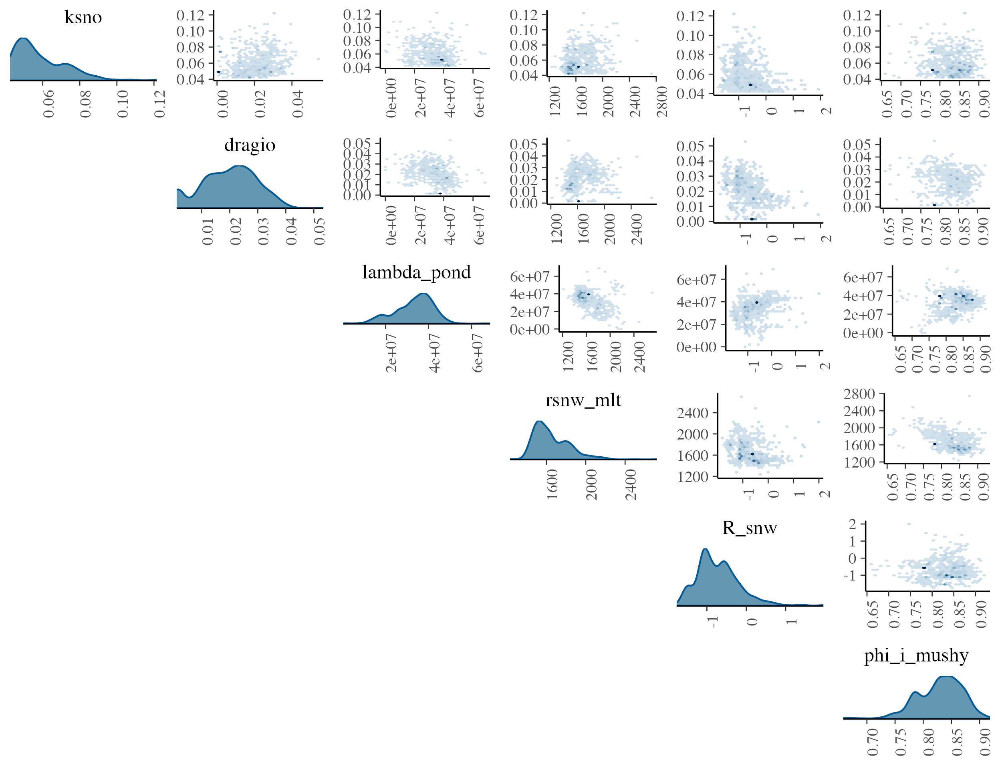
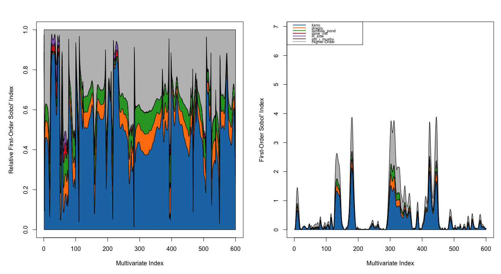

Bayesian Model Calibration
An Elastic Approach for curves in \(\mathbb{R}^n\)
![]()
January 7, 2026
Outline
- Introduction
- Elastic Shape Analysis
- Elastic Metric
- Elastic Bayesian Model Calibration
- Application
- Sea Ice Deformation Calibration

Introduction
- Question: How can we model (open and closed) curves in \(\mathbb{R}^n\)?
- Can we use them as predictors in a regression model?
- Can we calibrate a computer model?

- It is the same goal (question) of any area of statistical research
- One problem occurs when performing these types of analysis is that curves can contain variability in scale, rotation, and parameterization
- How do we characterize and utilize this variability in the models that are constructed from this type of data?
Mathematical Representations of Curves
- Parameterized curves \(\beta:[0,1] \rightarrow \mathbb{R}^2, \mathbb{S}^1\rightarrow\mathbb{R}^2\)

- Let \(\Gamma\) be the set of all diffeomorphisms of \([0,1]\) that preserve the boundaries. Elements of \(\gamma\in\Gamma\), plays the role of a re-parameterization
- For any curve \(\beta: [0,1] \rightarrow \mathbb{R}^n\), and \(\gamma\in\Gamma\), the composition \(\beta\circ\gamma\) is a reparameterization of \(\beta\)
- \(\Gamma\) is a group, and \(\beta\mapsto(\beta,\gamma) = \beta\circ\gamma\) defines the group action
Shape Preserving Transformations
Following group actions are shape preserving:
- Translation: For any \(x\in\mathbb{R}^2\), the \(\beta(t)\mapsto x+\beta(t)\) denotes a translation of \(\beta\)
- Rotation: For any \(O\in SO(2)\), the \(\beta(t)\mapsto O\beta(t)\) denotes rotation of \(\beta\)
- Scaling: For any \(a\in\mathbb{R}_+\), the \(\beta(t)\mapsto a\beta(t)\) denotes the scaling of \(\beta\)
- Re-parameterization: For any \(\gamma\in\Gamma\), \(\beta(t) \mapsto \beta(\gamma(t))\) is a re-parameterization of \(\beta\)
We want shape metrics and shape analysis to be invariant to these actions.
\[d_s(\beta_1,\beta_2) = d_s(aO(\beta_1\circ\gamma)+x,\beta_2)\]
Metrics for Registration/Shape Comparisons
- We need an objective function to define comparison of shapes
- The \(\mathbb{L}^2\) norm seems like a natural choice but is not a proper distance
- Main issue is that \(\|\beta\| \neq \|\beta\circ\gamma\|\)
- Need a metric that
\[ d(\beta_1,\beta_2) = d(\beta_1\circ\gamma_1, \beta_2\circ\gamma_2),\forall \gamma_1,\gamma_2\in\Gamma\]
- We will utilize an elastic shape metric that has these properties
Elastic Riemannian Metric
- Let \(\beta:[0,1] \rightarrow \mathbb{R}^n\) be a Euclidean curve
- Define the square-root velocity function (SRVF) \[ q(t) = \frac{\dot{\beta}(t)}{\sqrt{|\dot{\beta}(t)|}} \]
- The mapping transforms the complicated elastic Riemmanian metric into the \(\mathbb{L}^2\) for shapes
- Checking all nuisance transformations (translation, scaling, and reparameterization) we define the equivalence class of shape to be \[ [q] = \{O(q,\gamma)|O\in SO(n),\gamma\in\Gamma\}\]
Elastic Riemannian Metric
\[ [q] = \{O(q,\gamma)|O\in SO(n),\gamma\in\Gamma\}\]
- This set of SRVFS of all possible rotations, and reparameterizations of \(\beta\)
- Note: If we scale \(q\) to unit length then \(q\) is an element of a unit sphere \(\mathbb{S}_\infty\)
Shape Metric
- \(\mathbb{S}_\infty\) is called the pre-shape space
- The set of all equivalence classes is a quotient space \(\mathbb{L}^2/(SO(n)\times\Gamma)\), this is the shape space
- The distance between any two curves in the shape space is \[ d_s([q_1], [q_2]) = \inf_{(O,\gamma)\in SO(n)\times\Gamma} \cos^{-1} (\langle q_1,O(q_2,\gamma)\rangle)\]
- This includes rotational alignment and non-rigid registration of the two curves
- We will use this metric in our calibration
Shooting Vectors

- \(\mathbb{S}_\infty\) is a non-linear manifold, hard to define surrogate models
- Will use inverse-exponential map to map curves to vector space centered at mean (observation) \[ \frac{\theta}{\sin(\theta)}(q-\cos(\theta)q_{\mu}) \]
- where \(\theta=\cos^{-1}(\langle q, q_\mu \rangle)\)
Bayesian Model Calibration
- We wish to calibrate a computer model with parameters \(\phi\) to an experiment
- Can compute computer model (simulations) over wide range of \(\phi\)
- The data is parameterized curves
- Utilize elastic metrics in a Bayesian Model Calibration Framework
Bayesian Model Calibration

Bayesian Model Calibration
Let \(z(t,\boldsymbol{x_i})\) denote an experimental measurement from the \(i^{th}\) experiment
Similarly, let \(y(t,\boldsymbol{x_i}, \boldsymbol{u})\) denote a simulation of the \(i^{th}\) experiment with input parameters \(\boldsymbol{u}\)
An approach to Bayesian model calibration with functional responses is to specify \[z(t,\boldsymbol{x_i}) = y(t,\boldsymbol{x_i},\boldsymbol{\phi}) + \delta(t, \boldsymbol{x_i}) + \epsilon_i(t,\boldsymbol{x_i}), ~~\epsilon(t,\boldsymbol{x_i})\sim \mathcal{N}(0,\sigma_\epsilon^2)\]
Where \(\delta\) is a model discrepancy term and \(\epsilon\) represents all other error
This model will suffer from the aforementioned problems with dimension and variabiltiy in curves
How does one emulate a open/closed curve?
Elastic Bayesian Model Calibration

Elastic Bayesian Model Calibration
- Decompose observation into aligned curves \[z(t,\boldsymbol{x_i}) = O_z (\tilde z(t, \boldsymbol{x_i}) \circ\gamma_{z\rightarrow z}(t,\boldsymbol{x_i}))\]
- Decompose the simulations \[y(t,\boldsymbol{x_j}, \boldsymbol{u_j}) = O_y(\tilde y(t,\boldsymbol{x_j}, \boldsymbol{u_j}) \circ \gamma_{y\rightarrow z}(t, \boldsymbol{x_j}, \boldsymbol{u_j}))\]
- To facilitate modeling, we transform the curves into shooting vector space with \[ v_z = \frac{\theta}{\sin(\theta)}(y-\cos(\theta)) \]
- where \(\theta=\cos^{-1}(\langle y, z \rangle)\)
Elastic Bayesian Model Calibration
- Calibrate the aligned data and shooting vectors using the following model \[\boldsymbol{v}_{z}(\boldsymbol{x_i}) = \boldsymbol{v}_{y}(\boldsymbol{x_i}, \boldsymbol{\phi}) + \boldsymbol{\delta_v(\boldsymbol{x_i})} + \boldsymbol{\epsilon_v(\boldsymbol{x_i})}, ~~\boldsymbol{\epsilon_v(\boldsymbol{x_i})} \sim \mathcal{N}(0,\sigma_v^2\boldsymbol{I})\]
- Note: The shooting vector will be identity if the data is aligned to the observation (experiment)
- Then if \(\phi\) is calibrated correctly the shooting vectors will be at the center of the tangent space
MCMC Sampling
For each experiment the likelihood is a Gaussian likelihood
- We fit an emulator (Gaussian Process, BASS, MARS) to the simulated data
- Uniform priors on \(\phi\)
- Sample posterior using delayed rejection adaptive Metropolis Hastings
- Implemented using Impala (LANL) calibration framework
Calibration of Sea Ice Model

Calibration elastic de-cohesion parameters of sea ice growth model
Estimate the parameters describing the evolution and formation of the sea ice
Calibration

We have a good fit between experiment and simulation
Better residuals over standard calibration method
Model Parameters

Sensitivity Analysis

Software
- We have developed workflow in Python, R, and MATLAB
- All are dependent on packages authored by SNL, LANL, and others
- Dependent Packages:
fdasrvf- Elastic Functional Data AnalysismvBayes- Multivariate Bayes Surrogate Fitting and AnalysisBASS,BayesPPR,scaledvecchia,stochtree- Surrogate Modelsimpala- Bayesian Model Calibration
- Example python jupyter notebook available for use
Summary
Functional metrics provide a global measure of the difference of a curve in terms of scale, rotation, and re-parameterization
Integrated elastic functional metrics into Bayesian Model Calibration framework utilizing shooting vector representation
Demonstrated ability calibration of sea-ice cohesion parameters
Future Work
- Additional testing on real world examples
- Full incorporation of rotation matrices and warping functions
Papers
D. Francom, J. D. Tucker, J. G. Huerta, K. Shuler, and D. Ries, “Elastic Bayesian Model Calibration”, SIAM/ASA Journal on Uncertainty Quantification, vol. 13, no. 1, 2025.
J. Brown, J. P. Davis, J. D. Tucker, J. G. Huerta, and K. Shuler, “Quantifying uncertainty in analysis of shockless dynamic compression experiments on platinum, Part 2: Bayesian model calibration”, Journal of Applied Physics, vol. 134, no. 23, 2023.
Questions?
jdtuck@sandia.gov
http://research.tetonedge.net